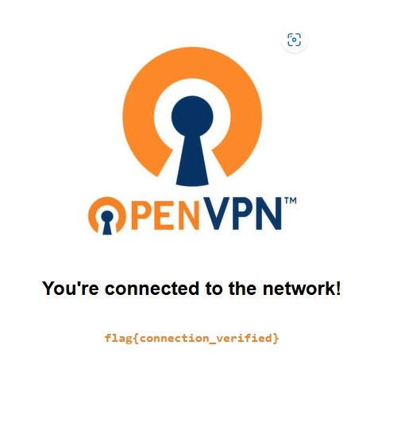

in this room talk about To connect to our network,
you need to download the OpenVPN GUI open-source application
and import your VPN configuration file.
connecting to with windows
this one is how to connect
vpn whith windows in deaply
connecting to macos
this one is how to
connect vpn whith windows in deaply
connecting to linux
in this room we must open kali linux for use i connect vpn like below image
install vpn on my terminal use command is
""sudo apt install openvpn ""
and file download from try hack me
afret that we can connect our vpn on terminal use command
""sudo openvpn my-file-name.ovpn""
using tryhackme without a vpn
we can use vpn in tryhacme open start attackbox is like linux
and use that onne any command and have terminal
check you are connected
that is ask me if i connect to vpn say check that
he ask me
--- What is the flag displayed on the deployed machine's website?

Go to First Page
back